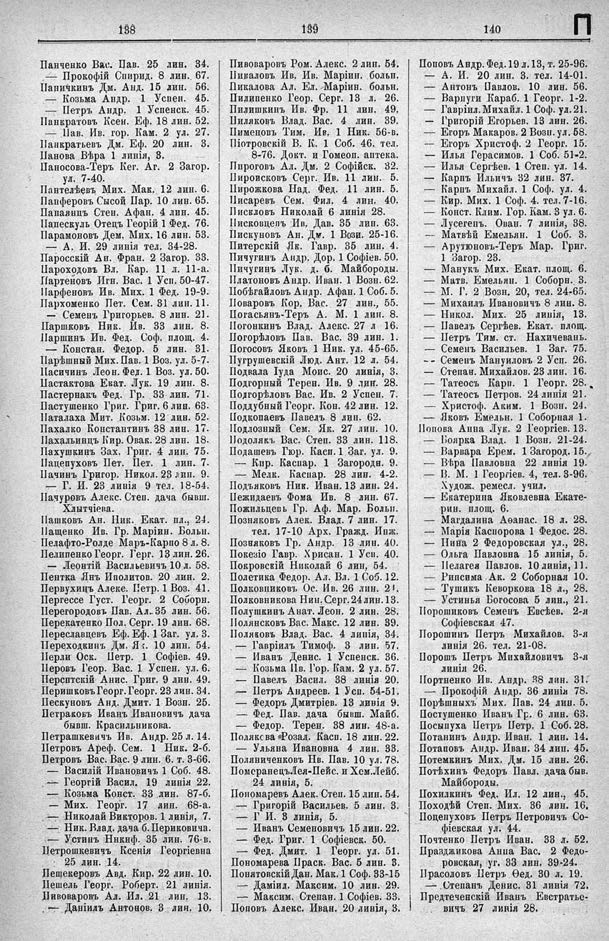

Лист источника 552
Скан

Распознанный текст
138
Панченко Вас. Пав. 25 лин. 34.
— Прокофій Спирид. 8 лин. 67.
Паничкинъ Дм. Анд. 15 лин. 56.
— Козьма Андр. 1 Успен. 45.
— Петръ Андр. 1 Успенск. 45.
Панкратовъ Ксен. Еф. 18 лин. 52.
— Пав. Ив. гор. Кам. 2 ул. 27.
Панкратьевъ Дм. Еф. 20 лин. 3.
Панова Вѣра 1 линія, 3.
Паносова-Теръ Кег. Аг. 2 Загор.
ул. 7-40.
Пантелѣевъ Мих. Мак. 12 лин. 6.
Панферовъ Сысой Пар. 10 лин. 65.
Папаянцъ Степ. Афан. 4 лин. 45.
Папескуль Отецъ Георгій 1 Фед. 76.
Парамоновъ Дем. Мих. 16 лин. 53.
— А. И. 29 линія тел. 34-28.
Паросскій Ан. Фран. 2 Загор. 33.
Пароходовъ Вл. Кар. 11 л. 11-а.
Партенөвъ Игн. Вас. 1 Усп. 50-47.
Парфеновъ Ив. Мих. 1 Фед. 19-9.
Пархоменко Пет. Сем. 31 лин. 11.
— Семенъ Григорьев. 8 лин. 21.
Паршковъ Ник. Ив. 33 лин. 8.
Паршинъ Ив. Фед. Соф. площ. 4.
— Констан. Федор. 5 лин. 31.
Парѣшный Мих. Пав. 1 Воз. ул. 5-7.
Пасичинъ Леон. Фед. 1 Воз. ул. 50.
Пастактова Екат. Лук. 19 лин. 8.
Пастернакъ Фед. Гр. 33 лин. 71.
Пастушенко Григ. Григ. 6 лин. 63.
Паталаха Мит. Козьм. 12 лин. 52.
Пахалко Константинъ 38 лин. 17.
Пахальнцъ Кир. Овак. 28 лин. 18.
Пахушкинъ Зах. Григ. 4 лин. 75.
Пацепуховъ Пет. Пет. 1 лин. 7.
Пачинъ Григор. Никол. 23 лин. 9.
— Г. И. 23 линія 9 тел. 18-54.
Пачуровъ Алекс. Степ. дача бывш.
Хлытчіева.
Пашковъ Ан. Ник. Екат. пл., 24.
Пащенко Ив. Гр. Маріин. Больн.
Пелафто-Ролде Марь-Карпо 8 л. 8.
Пелипенко Георг. Герг. 13 лин. 26.
— Леонтій Васильевичъ 10 л. 58.
Пентка Янъ Иполитов. 20 лин. 2.
Первухинъ Алекс. Петр. 1 Воз. 41.
Пергессе Густ. Георг. 2 Соборн.
Перегородовъ Пав. Ал. 35 лин. 56.
Перекатенко Пол. Серг. 19 лин. 68.
Переславцевъ Еф. Еф. 1 Заг. ул. 3.
Переходкинъ Дм. Як. 10 лин. 54.
Перли Оск. Петр. 1 Софіев. 49.
Перовъ Геор. Вас. 1 Успен. ул. 6.
Перситскій Анис. Григ. 9 лин. 49.
Перишковъ Георг. Георг. 23 лин. 34.
Пескуновъ Анд. Дмит. 1 Возн. 25.
Петраковъ Иванъ Ивановичъ дача
бывш. Красильникова.
Петрашкевичъ Ив. Андр. 25 л. 14.
Петровъ Ареф. Сем. 1 Ник. 2-б.
Петровъ Вас. Вас. 9 лин. 6. т. 3-66.
— Василій Ивановичъ 1 Соб. 48.
— Георгій Васил. 19 линія 22.
— Козьма Конст. 33 лин. 87-б.
— Мих. Георг. 17 лин. 68-а.
— Николай Викторов. 1 линія, 7.
— Ник. Влад. дача б. Периковича.
— Устинъ Никнф. 35 лин. 76-в.
Петрошкевичъ Ксенія Георгіевна
25 лин. 14.
Пещекеровъ Авд. Кир. 22 лин. 10.
Пешель Георг. Роберт. 21 линія.
Пивоваровъ Ал. Ил. 21 лин. 13.
— Даніилъ Антонов. 3 лин. 10.
139
Пивоваровъ Ром. Алекс. 2 лин. 54.
Пикаловъ Ив. Ив. Маріин. больн.
Пикалова Ал. Ел. Маріин. больн.
Пилипенко Геор. Серг. 13 л. 26.
Пилишкинъ Ив. Фр. 11 лин. 49.
Пиляковъ Влад. Вас. 4 лин. 39.
Пименовъ Тим. Ив. 1 Ник. 56-в.
Піотровскій В. К. 1 Соб. 46. тел.
8-76. Докт. и Гомеоп. аптека.
Пироговъ Ал. Дм. 2 Софійск. 32.
Пироисковъ Серг. Ив. 11 лин. 5.
Пирожкова Над. Фед. 11 лин. 5.
Писаревъ Сем. Фил. 4 лин. 40.
Писѣловъ Николай 6 линія 28.
Писковцепъ Ив. Дав. 35 лин. 63.
Пискуновъ Ан. Дм. 1 Вози. 25-16.
Питерскій Як. Гавр. 35 лин. 4.
Пичугинъ Андр. Дор. 1 Софіев. 50.
Пичугинъ Лук. д. б. Майбороды.
Платоновъ Андр. Иван. 1 Возн. 62.
Побѣгайловъ Андр. Афан. 1 Соб. 5.
Поваровъ Кор. Вас. 27 лин., 55.
Погасьянъ-Теръ А. М. 1 лин. 8.
Погонкинъ Влад. Алекс. 27 л 16.
Погорѣловъ Пав. Вас. 39 лин. 1.
Погосовъ Яковъ 1 Ник. ул. 45-65.
Пугрушевскій Люд. Ант. 12 л. 54.
Подвала Іуда Моис. 20 линія, 3.
Подгорный Терен. Ив. 9 лин. 28.
Подгорѣловъ Вас. Ив. 2 Успен. 7.
Поддубный Георг. Кон. 42 лин. 12.
Подкопаевъ Павелъ 8 лин. 62.
Подлозный Сем. Як. 27 лин. 10.
Подолякъ Вас. Степ. 33 лин. 118.
Подашевъ Гюр. Касп. 1 Заг. ул. 9.
— Кир. Каспар. 1 Загородн. 9.
— Мелк. Каспар. 28 лин. 4-2.
Подъяковъ Ник. Иван. 13 лин. 24.
Пежидаевъ Фома Ив. 8 лин. 67.
Пожильцевъ Гр. Аф. Мар. Больн.
Позняковъ Алек. Влад. 7 лин. 17.
тел. 17-10 Арх. Гражд. Инж.
Позняковъ Гр. Андр. 13 лин. 40.
Покезіо Гавр. Хрисан. 1 Усп. 40.
Покровскій Николай 6 лин, 54.
Полстика Федор. Ал. Вл. 1 Соб. 12.
Полковниковъ Ос. Ив. 26 лин. 21.
Полковникова Нин. Серг. 24 лин. 13.
Полушкинъ Анат. Леон. 2 лин. 28.
Полянсковъ Вас. Макс. 12 лин. 39.
Поляковъ Влад. Вас. 4 линія, 34.
— Гавріилъ Тимоф. 3 лин. 57.
— Иванъ Денис. 1 Успенск. 36.
— Козьма Ив. Гор. Кам. 2 ул. 57.
— Павелъ Васил. 38 линія 20.
— Петръ Андреев. 1 Усп. 54-51.
— Федоръ Дмитріев. 13 линія 9.
— Фед. Пав. дача бывш. Майб.
— Федор. Терен. 38 лин. 48-а.
Поляксова Розал. Касп. 18 лин. 22.
— Ульяна Ивановна 4 лин. 33.
Поляниченковъ Ив. Пав. 10 ул. 78.
Помсранецъ Лея-Пейс. и Хем. Лейб.
24 линія, 5.
Пономаревъ Алек. Степ. 15 лин. 54.
— Григорій Васильев. 5 лин. 3.
— Г И. 3 линія, 5.
— Иванъ Семеновичъ 15 лин. 22.
— Фед. Григ. 1 Софіевск. 50.
— Фед. Дмит. 1 Георг. ул. 51.
Пономарева Праск. Вас. 5 лин. 3.
Понятовскій Дан. Мак. 1 Соф. 33-15
— Даміил. Максим. 10 лин. 29.
— Максим. Степан. 1 Софіев. 33.
Поповъ Алекс. Иван. 20 линія, 3.
140
Поповъ Андр. Фед. 19 л. 13, т. 25-96.
— А. И. 20 лин. 3. тел. 14-01.
— Антонъ Павлов. 10 лин. 56.
— Варпуги Караб. 1 Георг. 1-2.
— Гавріил. Михайл. 1 Соф. ул. 21.
— Григорій Егорьев. 13 лин. 26.
— Егоръ Макаров. 2 Возн. ул. 58.
— Егоръ Христоф. 2 Георг. 15.
— Илья Герасимов. 1 Соб. 51-2.
— Илья Сергѣев. 1 Степ. ул. 14.
— Карпъ Ильичъ 32 лин. 37.
— Карпъ Михайл. 1 Соф. ул. 4.
— Кир. Мих. 1 Соф. 4. тел. 7-16.
— Конст. Клим. Гор. Кам. 3 ул. 6.
— Лусегепъ. Ован. 7 линія, 38.
— Матвѣй Емельян. 1 Соб. 3.
— Арутюновъ-Теръ Мар. Григ.
1 Загор. 23.
— Манукъ Мих. Екат. площ. 6.
— Матв. Емельян. 1 Соборн. 3.
— М. Г. 2 Возн. 20, тел. 24-65.
— Михаилъ Ивановичъ 8 лин. 8.
— Никол. Мих. 25 линія, 13.
— Павелъ Сергѣев. Екат. площ.
— Петръ Тим. ст. Нахичевань.
— Семенъ Васильев. 1 Заг. 75.
-- Семенъ Мануиловъ 2 Усп. 26.
— Степан. Михайлов. 23 лин. 16.
— Татеос Кари. 1 Георг. 28.
— Татеос Петров. 24 линія 21.
— Христоф. Аким. 1 Возн. 24.
— Яковъ Емельян. 1 Соборная 1.
Попова Анна Лук. 2 Георгіев. 13.
— Боярка Влад. 1 Возн. 21-24.
— Варвара Ерем. 1 Загород. 15.
— Вѣра Павловна 22 линія 19.
— В. М. 1 Георгіев. 4, тел. 3-96.
Худож. ремесл. учил.
— Екатерина Яковлевна Екате-
рин. площ. 6.
— Магдалина Аѳанас. 18 л. 28.
— Марія Каспорова 1 Федос. 28.
— Нина 2 Федоровская ул., 28.
— Ольга Павловна 15 линія, 5.
— Пелагея Павлов. 10 линія, 11.
— Рипсима Ак. 2 Соборная 10.
— Тушикъ Кеворкова 18 л., 28.
— Устинья Богосова 5 лин., 21.
Порошиковъ Семенъ Евсѣев. 2-я
Софіевская 47.
Порошинъ Петръ Михайлов. 3-я
линія 26. тел. 21-08.
Порошъ Петръ Михайловичъ 3-я
линія 26.
Портненко Ив. Андр. 38 лин. 31.
— Прокофій Андр. 36 линія 78.
Порѣшныхъ Мих. Пав. 24 лин. 5.
Постушенко Иванъ Гр. 6 лин. 63.
Посыпуха Петръ Петр. 1 Соб. 28.
Потанинъ Андр. Иван. 1 лин. 14.
Потаповъ Андр. Иван. 34 лин. 45.
Потемкинъ Мих. Дм. 15 лин. 26.
Потѣхинъ Федоръ Павл. дача быв.
Майбороды.
Похилкинъ Фед. Ил. 12 лин., 45.
Походѣй Степ. Мих. 36 лин. 16.
Поцепуховъ Петръ Петровичъ Со-
фіевская ул. 44.
Почтенко Петръ Иван. 33 л. 52.
Праздникова Анна Вас. 2 Федо-
ровская, уг. 33 лин. 39-24.
Прасоловъ Петръ Ѳед. 30 л. 19.
— Степанъ Денис. 31 линія 72.
Предтеченскій Иванъ Евстратье-
вичъ 27 линія 28.